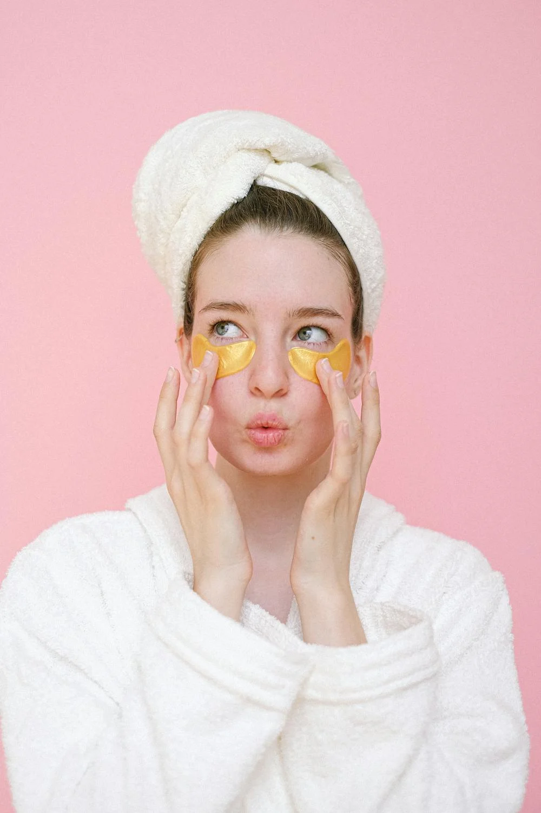

About This Website
Women Applying Skincare by Pexels
Web Developer Joy Wiljanen is concerned about the beauty industry's negative impact on the environment. With the rising trend of clean beauty, the number of clean beauty brands has steadily increased in recent years. Yet, there are still many beauty brands that have not adopted these clean and sustainable practices. In effort to address this environmental issue, the purpose behind this website is to help inform consumers about the harmful practices of the beauty industry and its impact on the environment.